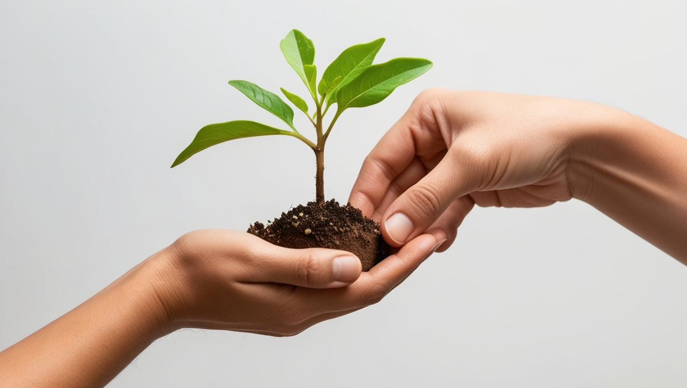

Sobre o Caraúbas Verde
O projeto Caraúbas Verde: Transformando o Amanhã trata do aumento das áreas verdes na cidade de Caraúbas por meio do plantio de árvores nativas. O objetivo principal é incentivar a comunidade a adotar práticas sustentáveis, como o cultivo de espécies locais, e conscientizar sobre a importância das árvores para o equilíbrio ecológico urbano.
